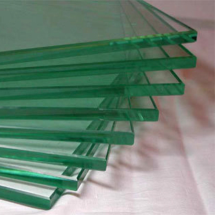
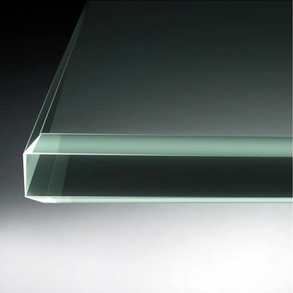
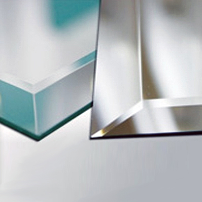

Еврокромка - это аккуратный вид и безопасность в обращении с зеркалом. Кромка зеркала шлифуется и полируется на автоматическом полировочном станке. Высокое качество кромки зеркала обеспечивается современным оборудованием и квалификацией наших специалистов.Обработка зеркала и его кромки сильно влияет на его прочность. Зеркало с полированной кромкой прочнее, чем без обработки. Каждая обработка зеркал проводится с учетом всех стандартов прочности.
 
Фацетирование (фацет) - это технология, по которой обрабатываются кромки зеркал и стекол, при которой образуется скошенная грань. Наиболее ценной считается обработка так называемого "фигурного" фацета - создание красивых криволинейных поверхностей с высокой точностью исполнения. Ширина фацета варьируется от 10 до 50 мм.

Ультра-фиолетовая склейка позволяет склеивать вместе стекла друг к другу или склеивать стекло и металл. При склеивании на обе поверхности наносится специальный связующий состав, который при облучении ультрафиолетом твердеет и не теряет прозрачности. Клеевой состав не заметен и после затвердевания становится значительно прочнее стекла. С помощью данной технологии изготавливаются различные виды стеклянной мебели - столы, витрины,полки, стойки и тому подобное.